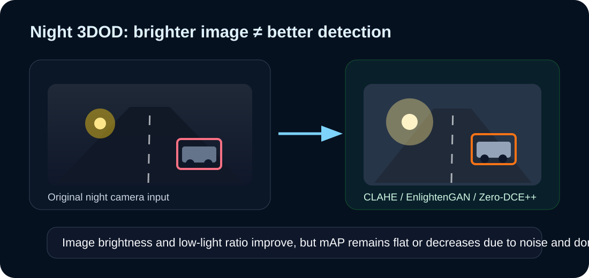

Night 3DOD
Low-light images disturb camera-LiDAR fusion.
Night scenes show severe camera brightness loss and high under-exposed pixel ratio. Image enhancement improves visual quality, but the enhanced distribution can still be harmful for detection.